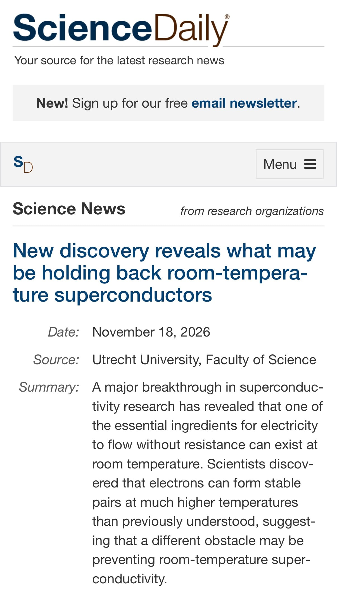

https://www.sciencedaily.com/releases/2026/11/261116023358.htm
우트레흐트, 라이덴, 뮌헨공대의 연구원들은 초전도성에 필수적인 전자 쌍이 상온에서도 온전하게 유지될 수 있으며, 그 결합을 유지하는 "접착제"가 극한 냉각 없이도 충분히 강력하다는 사실을 발견함.
결과는 사이언스지에 게재됨.

https://www.sciencedaily.com/releases/2026/11/261116023358.htm
우트레흐트, 라이덴, 뮌헨공대의 연구원들은 초전도성에 필수적인 전자 쌍이 상온에서도 온전하게 유지될 수 있으며, 그 결합을 유지하는 "접착제"가 극한 냉각 없이도 충분히 강력하다는 사실을 발견함.
결과는 사이언스지에 게재됨.
어어 테서렉트 발견
얘네도 돌 구워?
독일은 어떤돈을쓰냐
마르크요 돈에 저항이없거든요
메포 어음!
이제 알았냐 독일 ?? 늦어
아 또 지랄이야
고려대 가만있을거야?
초전도치의 봄은 오는가
갑자기 과힉력이 미친듯이 발전힌 독일은 세계를상대로..
레벤스라움을 가질것을 선포하고...
아 독일어 개어려운데...
내 이럴줄 알고 고딩때 제2외국어를 독일어로 했다 이말이야
구... 구텐 탁... 마동탁...
https://youtu.be/NeQM1c-XCDc?si=N6wyCX79ArgYB7Q6
시즌2야?
독일이 상온에서 작동하는 양자컴퓨터도 만들었던데, 다이아몬드 기반
냐뀨야..
음... 완전히 이해했어
또전또치야?
클로드, 가서 증명해!
유럽의 시대가 돌아온다
전자쌍 어쩌고 이부분 설명해줄 스피드웨건 필요함
전자가 쌍을 이루면 막무가내로 움직이던 입자들이 질서있게 움직이면서 저항이 0이되고 에너지 손실이 없어짐
초전도치 드가자 😤
초전도체 떡밥 존나 재밌었는데 세무냥이 리트냥이보다 더 재밌었음
안불쾌해서 ㅋㅋ
결과가 허무해서그렇지 떡밥도는동안 긍정적인 국뽕의 에너지가 가득했지
이게 사실이라면 접근방식이 유효하긴했다는거네?
이전 초전도치 스켐때도 존나 그럴싸하지않았나?
구리와 몇몇합금을 구워내면된다는게..
애초에 발전기도 자석위에 구리다발을 흔드는게 다인 심플한방식이라 진짜 혹했었음
도이칠란드 도이칠란드 우버랄랜드
전문가들 왈
상온초전도체 찾는법 나온 거라던데
즉 검색엔진 만든거라고
이제 ai로 검색엔진에 쑤셔넣으면 될꺼라고
독일 내가 먼저 공중에 떠서 갈거임
또 시작 하나?
사이언스면 지랄은 아니긴 해
이석배 뭐해!
역시 공구는 서독꺼가 이찌방이지


되겠냐???
동양에서 현명한 사람들이 나타나 그들의 지혜가 모든 바다와 국경을 넘겠지만, 세상 사람들은 그것을 거짓말이라고 생각할 것이다